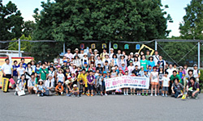

福島の子ども保養プロジェクトin埼玉 報告
東日本大震災による原発事故。健康被害に不安を抱え、あまり外で思い切り遊ぶことも出来ない福島の子供達。小さな子供達の健康を気遣い、精神的にも大変な思いをされている保護者の方々。福島保養プロジェクトin埼玉実行委員会では、こうした子どもたちや保護者の皆様に寄り添いながら、できる限りの支援をしたいということで、夏休みを利用して、埼玉に子どもと保護者をお招きし、子どもたちが十分に外遊びできる企画、保護者の疲れを癒す企画を実施しました。
- 【日 時】
- 8月24日(金)～26日(日)
- 【参 加 者】
- 32家族78人
- 【宿泊会場】
- 8月24日(金)埼玉県民活動センター(伊奈町)
- 【主 催】
- 福島子ども保養プロジェクトin埼玉実行委員会
【ボランティア】 80人：生協組合員ボランティア43人(さいたまコープ13､パルシステム埼玉10､生活クラブ3､医療生協さいたま15､埼玉県生協連2)､学生ボランティア17人(福島大学2､埼玉大学12､跡見学園女子大学3)､たっちアロマの会・社愛の泉10人､JA女性協議会7人(組合員5･事務局2)、臨床心理士3人
- 【事 務 局】
- 11人(さいたまコープ2､パルシステム埼玉2､生活クラブ生協1、医療生協さいたま3(看護師2含む)、埼玉県ユニセフ協会1、埼玉県生協連3)
【協力団体･企業】 会員生協･組合員､埼玉県ユニセフ協会､埼玉大学生協学生委員会､大宮アルディージャ､東武レジャー企画､鉄道博物館､JA埼玉県中央会･JA女性組織協議会株式会社伊藤園､東京サラヤ､臨床心理士協会､たっちアロマの会
■プロジェクト概要
8月24日(金)
 8：00
8：00- 福島駅西口出発・9：20郡山駅西口出発(大型バス2台)
 13：00
13：00- 東武動物公園着、16：00までグループ行動を基本に見学(一部親子)
- 学生ボランティア11人(福島大学2人、埼玉大学9人)
|  |
 15：00
15：00- 県民活動センターにボランティア31人(生協組合員26人、JA女性協5人）が集合し、小松菜入り冷製スープとデザートを調理しました。JAからは、小松菜・梨・ブルーベリーの提供がありました。
- 16：30
- 参加者は、県民活動センター到着。
 18：00
18：00- ボランティア含めた全員でウエルカムパーティを1階レストランでおこない、参加者は144人になりました。岩岡埼玉県連副会長の｢皆さんはご苦労ご心配の毎日であると思います。3日間、皆さんに楽しんでいただくために全力で取り組んでいきます｣との歓迎の挨拶で始まり、和やかに交流しました。お楽しみ企画として、埼玉県にちなんだクイズ、学生ボランティアの企画(ビンゴゲーム)には、異様な盛り上がりがありました。さいたまコープ佐藤理事長が｢地元の生協と農協の皆さんで準備をしてきました。今日は楽しんでいただけましたか。くれぐれも怪我のないよう後2日間楽しみましょう｣と閉会のあいさつをしました。その後の花火大会には、ほとんどの親子が参加しました。
| 夕食の様子 | 埼玉県にちなんだクイズに 身を乗り出す |
| 食後のデザート作り(さいたまコープ・パルシステム埼玉) | |
| ビンゴゲームを楽しむ子どもたち | 今日の感想を聞ききました |
| 夕食後の花火大会 | |
8月25日(土)
- 9：00
- 県民活動センターを出発。
- 10：00
- 埼玉大学に到着しました。埼玉大学では、上井学長、井上埼玉大学生協理事長にお迎えいただきました。はじめに上井学長から｢福島では、外で遊ぶことが難しくなっています。今日は、埼玉大学のキャンパスで思いきり遊んでもらい、思い出を作ってください。今日も明日もあります。思う存分楽しんでください｣とあいさついただきました。その後、子どもたちは外で、大学生のボランティアとのお遊び大会(ヘビじゃんけん・綱引き・輪投げ)をし、外遊び終了後は、生協食堂に戻り｢まんぽゲーム｣をグループ対応でおこないました。保護者の方は、大学生協食堂内でアロママッサージやボムせっけん作りをおこないました。また、組合員さんによる｢お茶｣コーナーも評判でした。
- 12：30
- 生協食堂で昼食(JAから梨、ブルーベリー、茄子、南瓜、ゴーヤの提供）
| ビュッフェスタイルの昼食 |
- 13：40
- 埼玉大学を出発し、スポーツ総合センターに14時30分に到着。
- 17：30
- サッカー観戦のため、ナックファイブスタジアムに向かう(18：00着)。ナックファイブスタジアムは、夏休み最後の土曜日ということもあり大混雑で、グループ毎の観戦にはなりませんでした。
8月26日(日)
- 9：00
- スポーツ総合センターを出発。
- 9：40
- 鉄道博物館に9時40分に到着しました。鉄道博物館は、家族毎に見学し、学生ボランティア・事務局は館内での案内・問合せに徹しました。
- 12：00
- フレンドリートレイン内で昼食。
- 13：00
- 子どもたちや保護者の皆様は分かれを惜しみながら福島に向けて出発しました。子ども達は、3日間お世話になった学生ボランティアと別れを惜しんでいました。
～ ∵ ∵ 福島からの参加者の声 ∵ ∵ ～
- Kさん(母親)～親も一緒にリフレッシュできて、幸せでした。福島では、小川に入らないでと言っても、子供達は、放射性物質のこと考えないで、遊んでいます。親の心配は、計り知れない。福島県は観光地なので、観光をあまりしてきませんでした。今回の遊園地、鉄道博物館はとても楽しかったです。
- Iさん(父親)～久々に子どもと楽しい時間を過ごせました。福島では、離ればなれで生活しているので、今回、あえて私が子供たちと参加させてもらいました。
- Aくん(男の子)サッカー観戦が楽しかった。心の中で、東北のチームを応援していました。でもアルディージャの旗も買いました。
- Bさん(女の子)～大学生のお姉さんにたくさん遊んでもらえて楽しかった。